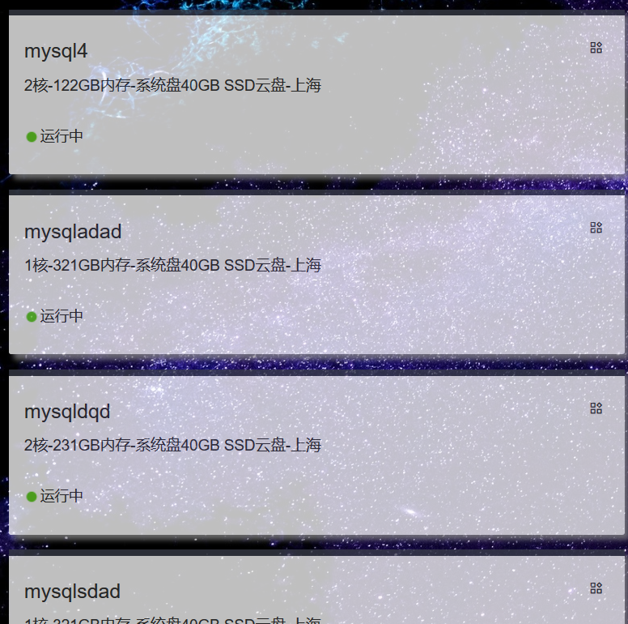

Hello, welcome to
 Scroll Down
Scroll Down
Docker_Paas
Scroll Down什么是Docker
Docker 是一个开源的应用容器引擎基于Go语言并遵从Apache2.0协议开源。 Docker 可以让开发者打包他们的应用以及依赖包到一个轻量级、可移植的容器中， 然后发布到任何流行的 Linux 机器上，也可以实现虚拟化。
1Web应用的自动化打包和发布
2自动化测试和持续集成、发布。
3在服务型环境中部署和调整数据库或其他的后台应用。
Services
申请服务
nginx
Nginx是一个高性能的HTTP和反向代理web服务器，同时也提供了IMAP/POP3/SMTP服务。
你可以通过选择nginx服务并提交服务名，生成副本数量，cpu，ram等信息，创建属于自己的nginx服务
java
Java可以用于编写桌面应用程序、Web应用程序、分布式系统和嵌入式系统应用程序等。
你可以通过选择java服务并提交服务名，生成副本数量，cpu，ram，jar命令等信息，上传jar包，创建属于自己的java服务
mysql
MySQL是一个关系型数据库管理系统，同时也是最流行的关系型数据库管理系统之一。
你可以通过选择mysql服务并提交服务名，生成副本数量，cpu，ram，mysql密码等信息，创建属于自己的mysql服务
more
更多服务，敬请期待
My Work
what can DockerPaas do?

我的服务--简要信息
在"我的服务"页面可以看到您所有服务的简要信息
我的服务--详细信息
在详细信息页面可以看到服务的具体信息

我的服务--终端
点击"进入"按钮，进入终端界面，down文件夹下的文件将显示在右侧列表中，您可以通过点击按钮实现与容器的文件交互
日志
管理员联系方式
电话：1234567890
邮箱：1921432231@qq.com
地址：金陵科技学院
click picture to start DockerPaas